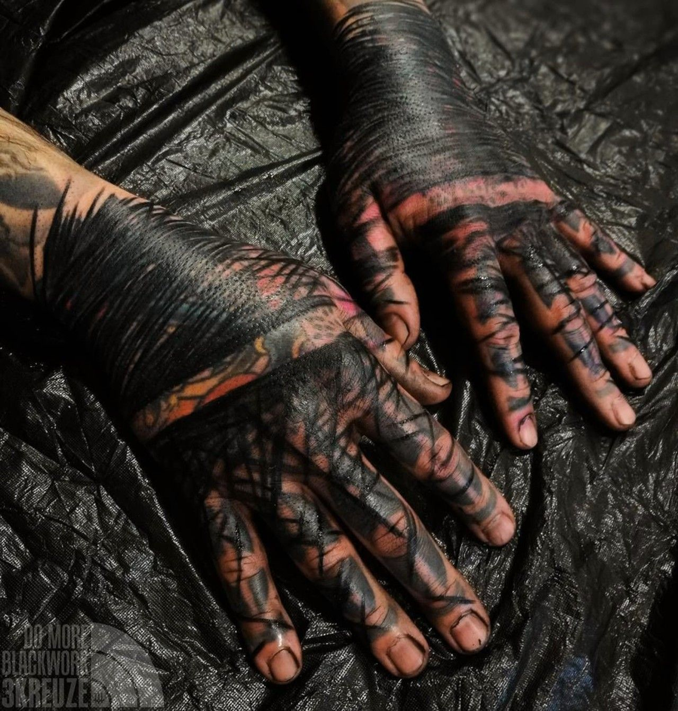

Nuestra historia
En Blackout Tattoo, nuestra historia comenzó hace un año, en 2022, cuando abrimos nuestras puertas como un dispensario online, especializado en máquinas de tatuar, agujas y tintas de alta calidad. Nos hemos dedicado cada día a perfeccionar nuestro conocimiento y ofrecer productos excepcionales para tatuadores apasionados. Con compromiso y experiencia, hemos crecido y evolucionado, convirtiéndonos en un recurso confiable para la comunidad del tatuaje. Únete a nosotros en esta travesía, donde cada producto cuenta una historia de calidad y creatividad, y cada cliente se convierte en parte de la familia Blackout Tattoo.
